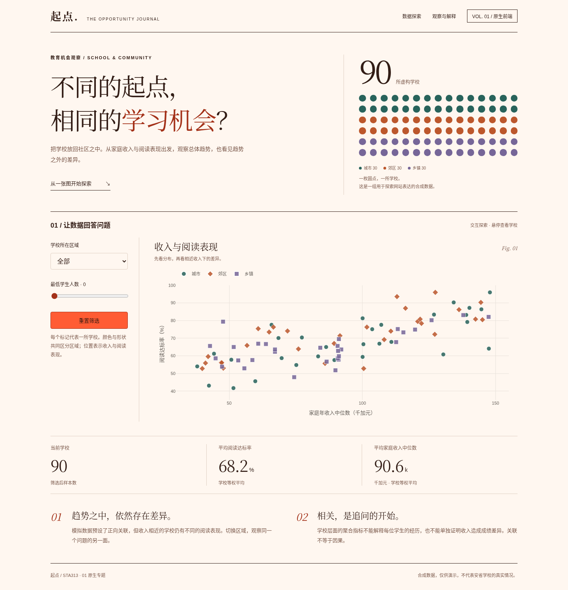
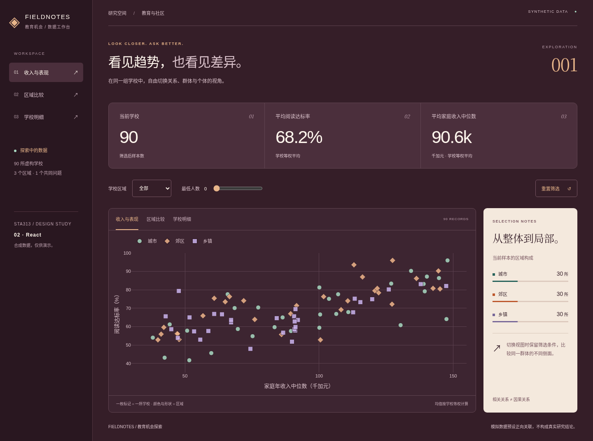
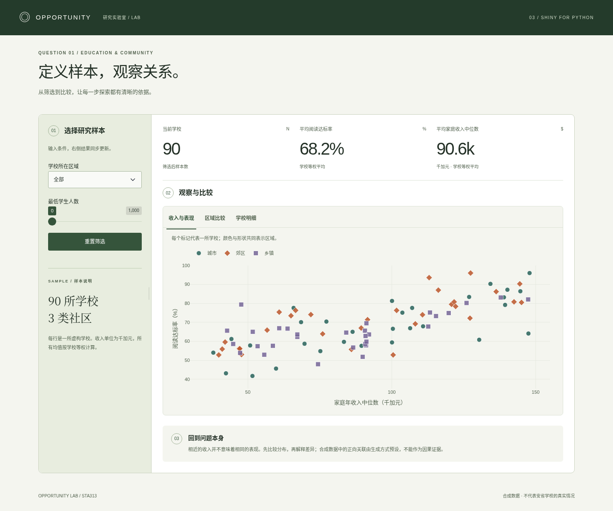
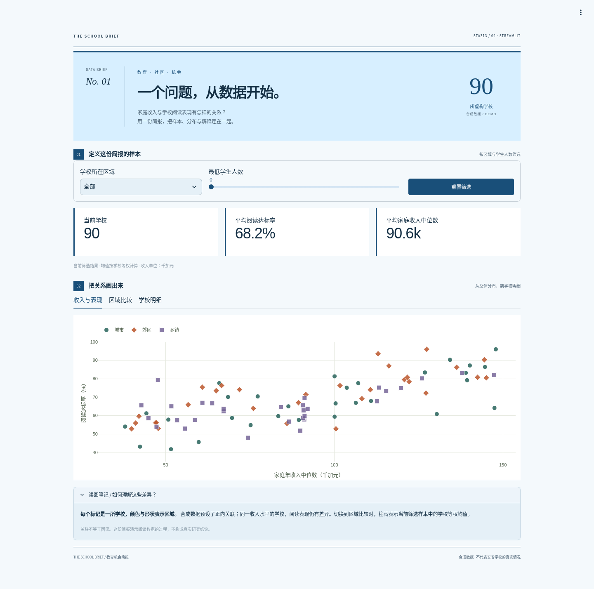
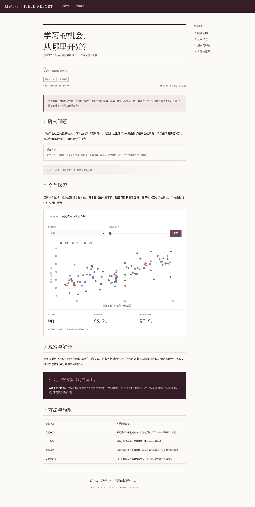

STA313 / WEBSITE DESIGN STUDIESLOCAL EDITION · 01—05
SAME DATA. DIFFERENT PERSPECTIVES.
五种表达，一个研究问题。
相同的学校数据，不同的阅读节奏。选择一种设计方向，进入真实页面，尝试筛选、图表与视图切换。

01 / HTML · CSS · JAVASCRIPT
杂志专题
大字、暖纸色与清晰的阅读节奏。先提出问题，再引导读者探索。
进入原生前端 Demo ↗
02 / REACT
探索工作台
深梅色分析空间，多个视角与样本笔记。适合反复筛选和比较。
进入 React Demo ↗
03 / SHINY FOR PYTHON
研究实验室
玉石绿样本区与白色分析台。沿选择、观察、解释三个步骤推进。
进入 Shiny Demo ↗
04 / STREAMLIT
数据简报
冷蓝色刊头与紧凑的顺序布局。一份可以操作的数据阅读简报。
进入 Streamlit Demo ↗
05 / QUARTO
研究刊物
衬线标题、章节目录与梅紫色批注。让论述与交互图表一起展开。
进入 Quarto Demo ↗